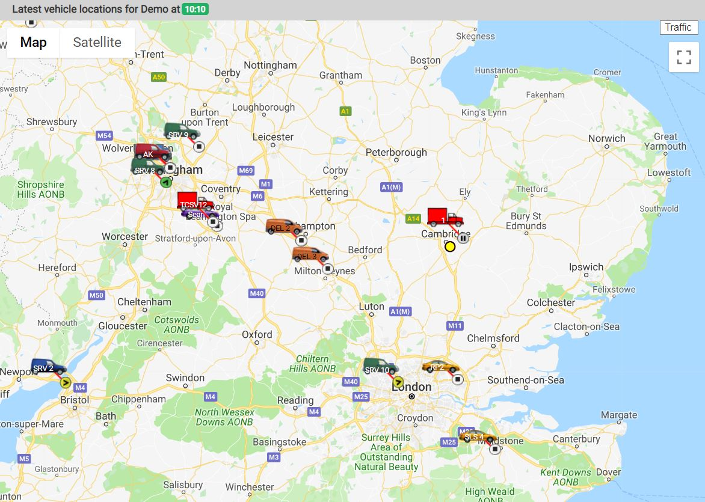
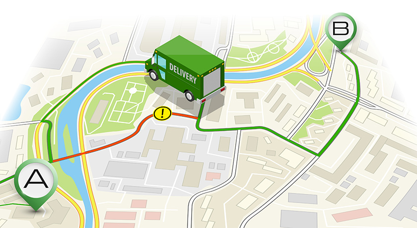

GIS Applications
Urban Planning
GIS helps city planners map traffic, utilities, and land use to make smarter decisions for infrastructure and development.


Environmental Management
Monitor forests, water bodies, and wildlife habitats. GIS helps protect ecosystems and track environmental changes.


Logistics & Transport
Analyze routes, optimize deliveries, and manage fleets efficiently using GIS mapping and spatial data.



